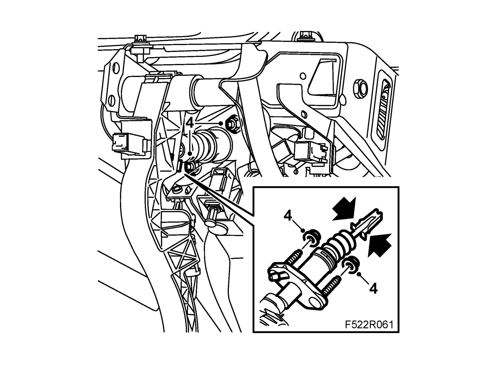
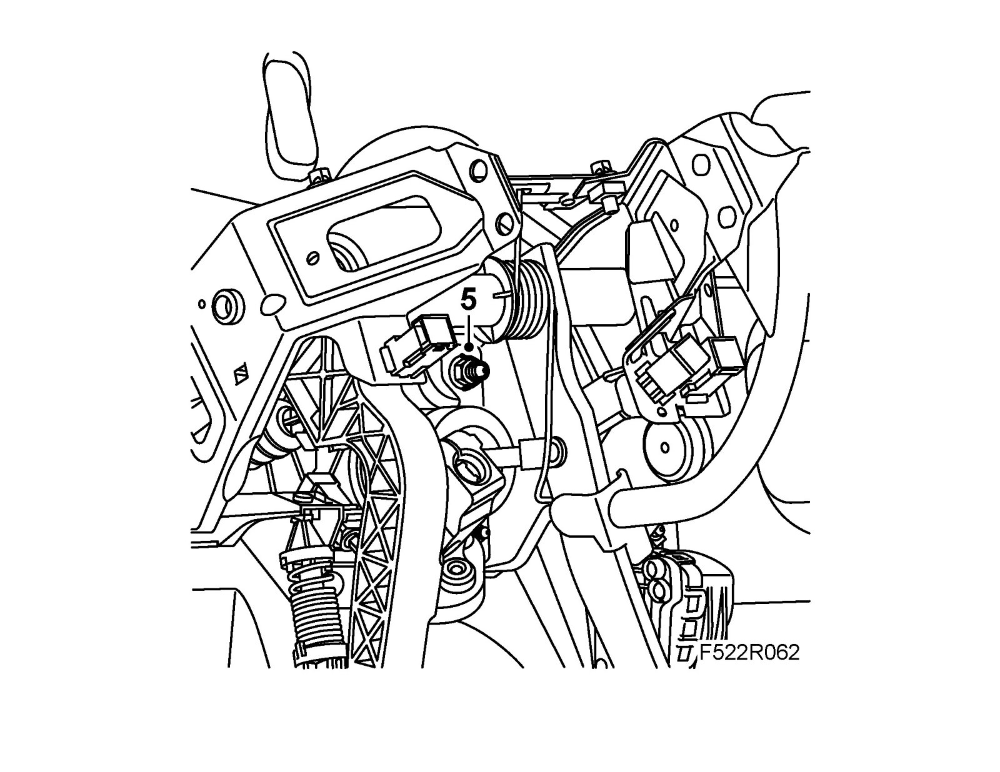
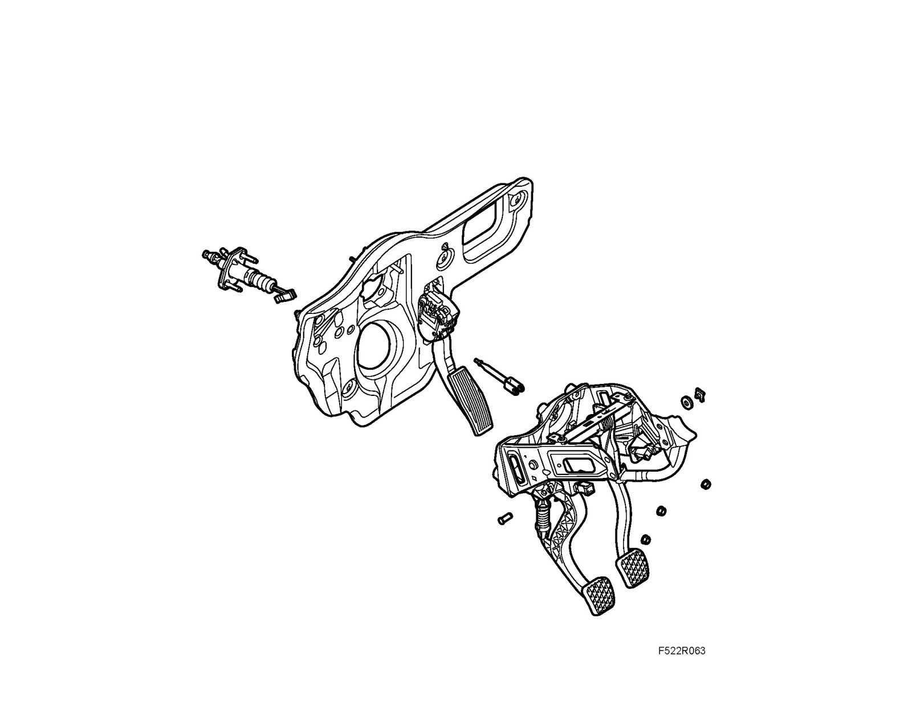
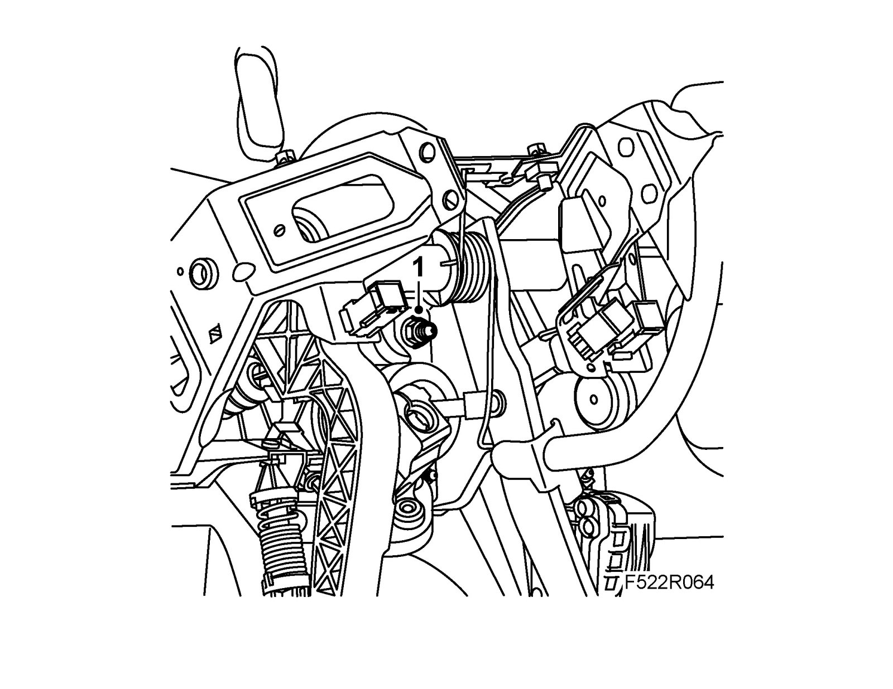
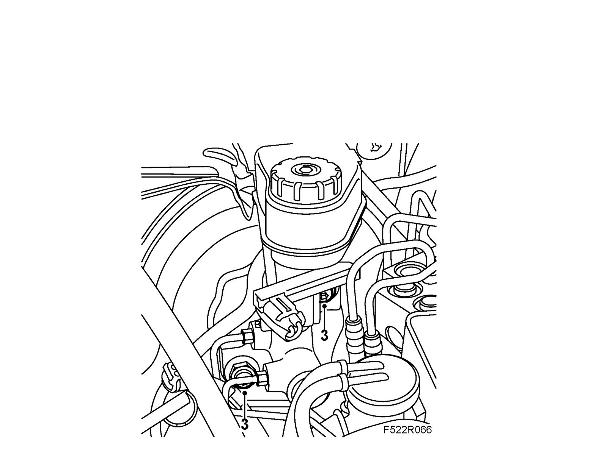
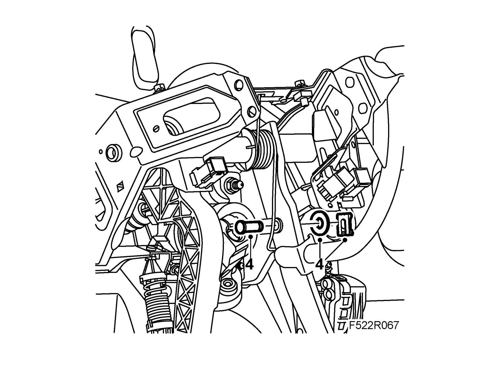

Pedal Bracket, LHD
Pedal bracket, LHDTo remove
1. Remove Steering wheel member.
2. Remove brake pedal link bolt.
3. Undo the brake servo bolts.
4. Manual gearbox: Remove the clutch master cylinder. Detach the pushrod from the clutch pedal. Use a pair of nose pliers with bent jaws.

5. Remove the pedal bracket.

To fit
Note
When changing the pedal bracket, the following parts must be removed from the spare part:
^ Brake pedal pushrod.
^ Plate with accelerator pedal that the pedal bracket is fastened to.
^ Manual gearbox : Clutch cylinder

1. Fit the pedal bracket to the bulkhead.
Tightening torque 20 Nm (14 lbf ft)

2. Manual gearbox: Connect the pushrod to the clutch pedal. Fit the nuts to the clutch master cylinder. Pull out the adjusting rod from the self-adjusting cruise control switch and press it back with the clutch pedal for correct adjustment.
Tightening torque 20 Nm (14 lbf ft)
3. Fit the brake servo bolts.
Tightening torque 20 Nm (14 lbf ft)

4. Fit the brake pedal link bolt.

5. Adjust the pedal switches. Depress the brake pedal and pull out the adjusting rod from the self-adjusting pedal switches.
6. Fit the steering wheel member.